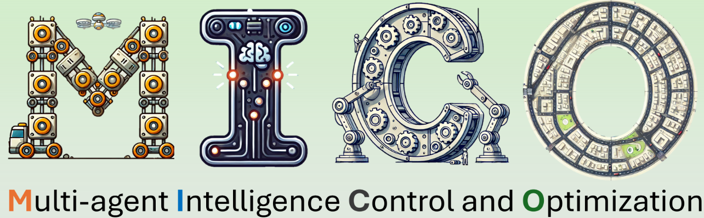
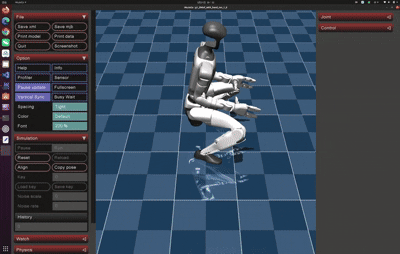
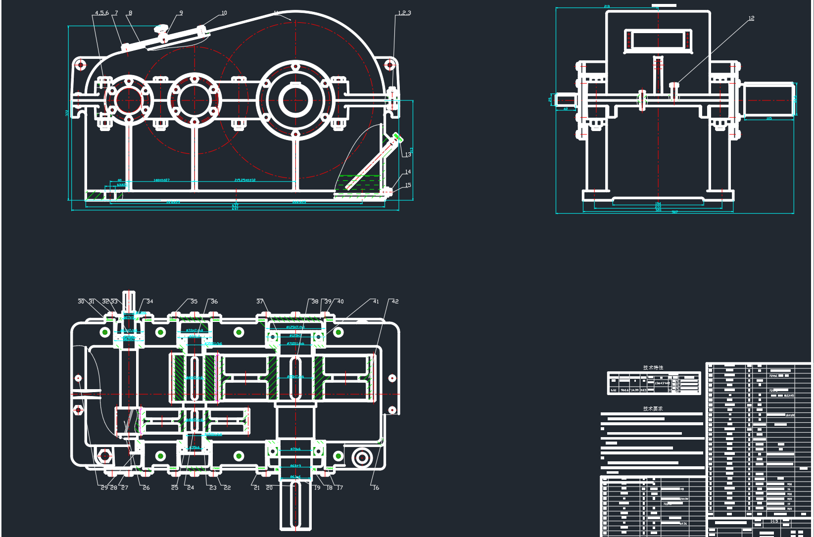

|
Jiawei Xia I am a undergraduate student at Beijing University of Chemical Technology (BUCT). My major is Mechanical Design, Manufacturing, and Automation, and I am currently in my third year of university. I worked as a part-time remote research assistant at George Mason University MICO Lab for six months, under the supervision of Dr. Yizhi Zhou. Now, I am working as a research intern at Institute for AI Industry Research, Tsinghua University, focusing on Humanoid Robots , VLA and SLAM ; under the supervision of Dr. Yongliang Shi, Dr. Weibin Gu and Prof. Guyue Zhou. During my time at BUCT, I am maintaining a GPA of 3.75 (rank 6%) and leading the SIE Robotics Club, a student organization focused on general-purpose service robots, and mentored lower-year students interested in robotics. I am currently interested in robotics research, including RL, Embodied AI, SLAM and so on, and I am actively learning about these topics. In my spare time, I enjoy photography, traveling, F1, basketball. Email: xiaharroldqq@gmail.com |

|
🔥 News
|
{kind=link}
🧑🎓 Education |

|
Beijing University of Chemical Technology, Beijing, China
Bachelor of Engineering, Mechanical Design, Manufacturing and Its Automation (Robotics) 2022-Now GPA: 3.75/4.33 Rank 6% Ex-president of SIE Robotics Club. |
💻 Internship |

|
Discover Lab, Institute for AI Industry Research, Tsinghua University
Intern Advisor: Dr.Weibin Gu 2025.5-NOW Focus on Humanoid robot reinforcement learning and motion control, Dual-arm robot and Vision-Language-Action-Model. |
|
|
Institute of Navigation and Control, Tsinghua University
Intern Advisor: Dr.Yongliang Shi 2024.11-2025.5 Developed an SDK for the IRSV thermal camera that can be used within ROS. Utilize EVO tool to assess the performance of the various algorithms on the customized dataset. Participated in the development of a Point-line-Thermal-LiDAR-Inertial SLAM system based on FAST-LIVO and AirSLAM. |
|
 |
Multi-agent Intelligence, Control, and Optimization Lab, George Mason University
Remote research assistant Advisor: Dr.Yizhi Zhou 2024.7-2025.3 Participated in the development of a Robust Online Calibration Framework for UWB anchors in VINS to improve anchor positioning accuracy and robot localization; Participated in the development of CVIRO: A Consistent and Tightly-Coupled Visual-Inertial-Ranging Odometry on Lie Groups. |
📚 Publications* : Equal contribution; †: Corresponding author(s) |
|
|
(Submitted) Robust Online Calibration for UWB-Aided Visual-Inertial Navigation with Bias Correction
Yizhi Zhou*, Jie Xu, Jiawei Xia, Zechen Hu, Xuan Wang† IROS, 2025 [Paper] [Video] This paper proposes a robust online calibration method for UWB anchors in Visual-Inertial Navigation Systems (VINS). It overcomes issues with existing methods, such as reliance on accurate robot localization and sensitivity to initial anchor positions. Based on MSCKF, our approach uses stochastic optimization for reliable initialization and a Schmidt Kalman Filter for online refinement. Simulations and real-world tests show improved accuracy and robustness. |

|
(Submitted) CVIRO: A Consistent and Tightly-Coupled Visual-Inertial-Ranging Odometry on Lie Groups
Yizhi Zhou*, Ziwei Kang, Jiawei Xia, Xuan Wang† IROS, 2025 [Paper] [Video] This paper proposes a consistent and tightly-coupled visual-inertial-ranging odometry (CVIRO) system based on the Lie group. Our method incorporates the UWB anchor state into the system state, explicitly accounting for UWB calibration uncertainty and enabling the joint and consistent estimation of both robot and anchor states. Further more, observability consistency is ensured by leveraging the invariant error properties of the Lie group. |
🤖 Reaserch Projects |
|
 |
Based on HOMIE to train Unitree G1 for stable squatting and walking and deploy policy to real robots
Jiawei Xia* Based on HOMIE, Use RL algorithms to train G1 stable squatting and walking in isaacgym, implement sim2sim in mujoco, and deploy the policy to real robots, and we will start deep research on robot movements on this basis |

|
Reproduce and train the open-source neural network 'Action Chunking with Transformer' based on the LeRobot open-source project
Jiawei Xia*, Xianglei Dong* Built Lerobot arm using 3D printing and solve the servo jitter problem using PID control. Create a Mujoco simulation environment that uses a keyboard to control the corresponding angle change or the end-posture changes of Lerobot. Collecte data of camera images and joint states for training the open-source neural network: Action Chunking with Transformer (ACT). The total cost was kept under $220. |

|
Point-line-Thermal-LiDAR-Inertial SLAM system with loopback detection and pre-processing of thermal images
Yixiao Feng* Jiawei Xia* Based on FAST-LIVO, use AirSLAM(Point-Line Visual SLAM Model) to tackle thermal imaging environment illumination challenges and weak texture, incorporate the method of Online Photometric Calibration of Automatic Gain Thermal Infrared Cameras into VIO system for thermal carema. Record a dataset consisting of various challenging environments on own 3D print device. Utilize EVO tool to assess the performance of the various algorithms on the customized dataset. Contribute to the development of a loop closure detection system by DBoW3 and GTSAM. |

|
Robocup@Home: Develop an intelligent home service robot based on ros
Jiawei Xia*, Xianglei Dong, Wengcong Zhang, Boyi Zhang, Yutong Sun Develop an intelligent home service robot using Kinova Gen2 and Kinect Azure camera, with functions including guest reception and guidance, voice interaction, object recognition, and room cleaning. For object grasping, use the gpd_ros and GraspNet packages to get 6D pose of objects,and send it to robotics by TF listen, use MoveIt to control the robot arm path planning; For object recognition,integrated YOLOv5 and Kinect DK; Successfully develop and implement a unique robotic door-opening solution. |

|
RoboMaster University League 1v1 Combat Competition
Yutao Guo*, Hanhong Fu, Jiawei Xia Use the open-source vision algorithm framework of the South China Normal University - PIONEER team to our own robot, use PnP to calculate the 3D position of the armor plate, and use Kalman filtering for tracking; The robot uses four M3508 motors for the chassis and two M6020 motors for the turret, controlled via CAN communication and PID algorithms for current, speed, and position loops. A six-axis gyroscope provides data via SPI, fused with the Mahony algorithm to compute quaternion-based turret orientation. Use feedforward PID to improve the gimbal drive and achieve gravity compensation. |

|
Simulation of an Intelligent Mineral Handling Robot
Jiawei Xia*, Wencong Zhang, Xianglei Dong, Boyi Zhang ICRA 2024 RoboMaster University Sim2real Challenge：Utilize ArUco library for detecting boxes' poses. Extract the transformation and rotation matrices of box from solvePnP and use our own message. Develop an Extended Kalman Filter alongside an omnidirectional motion model for state estimation using sensor data, including IMU, odometry and depthimage to laserscan. Utilize A* and TEB algorithm. |
|
 |
Design a two-stage high-speed helical gear and low-speed spur gear cylindrical reducer using AutoCAD
Jiawei Xia* Design a two-stage high-speed helical gear and low-speed spur gear cylindrical reducer using AutoCAD, with a design life (service life) of 10 years. The transmission device consists of a motor, V-belt, reducer, and working machine. |
🏆 Honours & Awards |
|
2025 Third Prize in DJI Technology RoboMaster University League Competition 2025, China, Shandong Province. 2024 Xiaomi Scholarship 2024 Second Prize in Robocup@Home Competition (leader) 2024 Second Prize in China iCAN Innovation Contest (leader) 2023 Beijing University of Chemical Technology Excellent Student Leader 2021 First Prize in DJI Technology RoboMaster Youth East China League Competition
|
🏀 Leaderships & Activities |
|
Teaching Assistant of Robotic Workshop at BUCT Leader of the SIE Robotics Club Signed Photographer for 500px and Visual China: Traveled to over 70 cities worldwide Leader of the BUCT EYE Photography Club Leader of the Comprehensive Office, BUCT Student Union Member of BUCT SIE Basketball Team |
|
Design and source code from Jon Barron's website. |